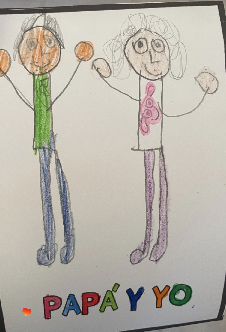
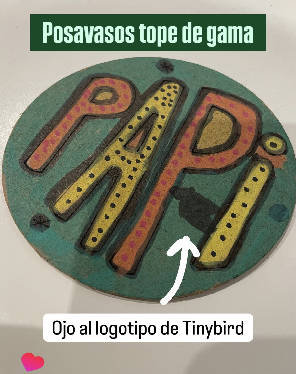
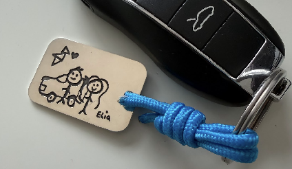

Hola a todos, como sabéis hoy es mi último día, había escrito un texto de 3 páginas para despedirme pero era un texto muy triste y creo que reflejaba mucho más mi estado de ánimo de ese momento que de verdad cerraba los 8 años que he estado en esta santa empresa como Dios manda, así que mejor os dejo algo que los explica mucho mejor con menos palabras.
Unos días después de que Sergio tuviese a su hija, aún trabajamos en CARTO, me dijo una frase que nunca olvidaré: “cuando tienes una hija te das cuenta de lo que es el verdadero amor”. Estas cosas no se entienden hasta que no las vives, como todo lo importante. Yo le puse ojos a aquella frase cuando nació Elia. Tinybird y Elia nacieron al mismo tiempo, escribía las primeras líneas (a mano) mientras ella echaba sus primeras siestas. Elia ahora va a cumplir 8 años. Como curiosidad, el nombre de Elia me lo sugirió un socio de Tinybird que se salió a las 2 semanas :)
Seguramente os acordáis de pocas cosas de cuando teníais menos de 8 años, la mayoría de cosas son momentos puntuales, sensaciones, lugares, pero es difícil que te acuerdes de otras cosas, los problemas del día a día de tu familia o del trabajo de tus padres más allá del nombre de la profesión.
Mi hija, desde que tiene capacidad para manejar un lapicero, no ha hecho un solo dibujo de familia donde no haya un logotipo de Tinybird (podéis ver alguna de sus obras de arte en las imágenes de abajo) y creo que no hay mejor forma de explicar lo que Tinybird ha significado en mi vida.
He vivido esta empresa, y no hay cosa mejor que vivir algo, aunque a ratos sea duro, os lo recomiendo.



“Qué vas a hacer ahora?” es la frase que más he escuchado en el último mes.
Nada. Bueno, voy a recuperar mi ilusión —perdida— por esta profesión, intentar volver a ser “yo” después de este año tan duro y, cuando me vuelvan las ganas, sea cuando sea, seguramente pegaré el último tiro (y espero que este no termine con un divorcio como los anteriores, jajaja, perdonad, me es imposible que no haga el payaso todo el rato)
Gracias a todos por estar aquí, no puedo tener más suerte de haber coincidido con gente como vosotros (este mensaje no llegará solo a los que estáis aquí y ahora). Sois todos unos raros de cojones, unos carabolis, algunos manzanillos, jetas, fulanos, pericos, pizpiretas… pero eso me gusta, espero volver a veros en algún momento de nuestra vida, de hecho sé que algunos ya no saldréis de la mía.
Mucha suerte, sois muy buenos, confío en vosotros, lo vais a hacer bien. Para lo que necesitéis, ya sabéis donde encontrarme.